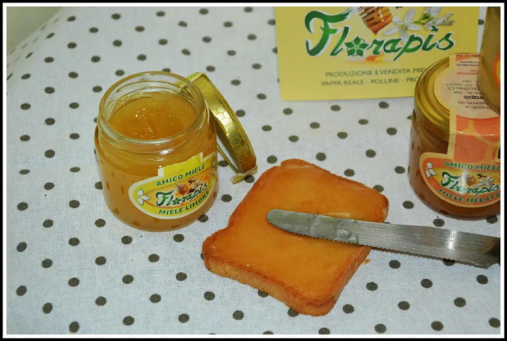
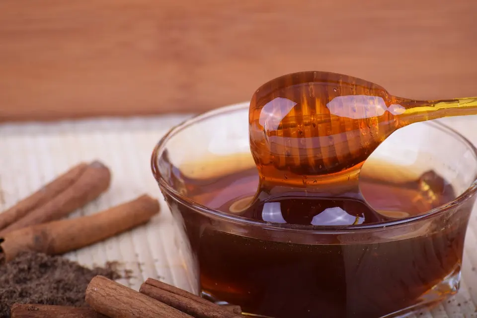
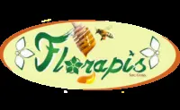
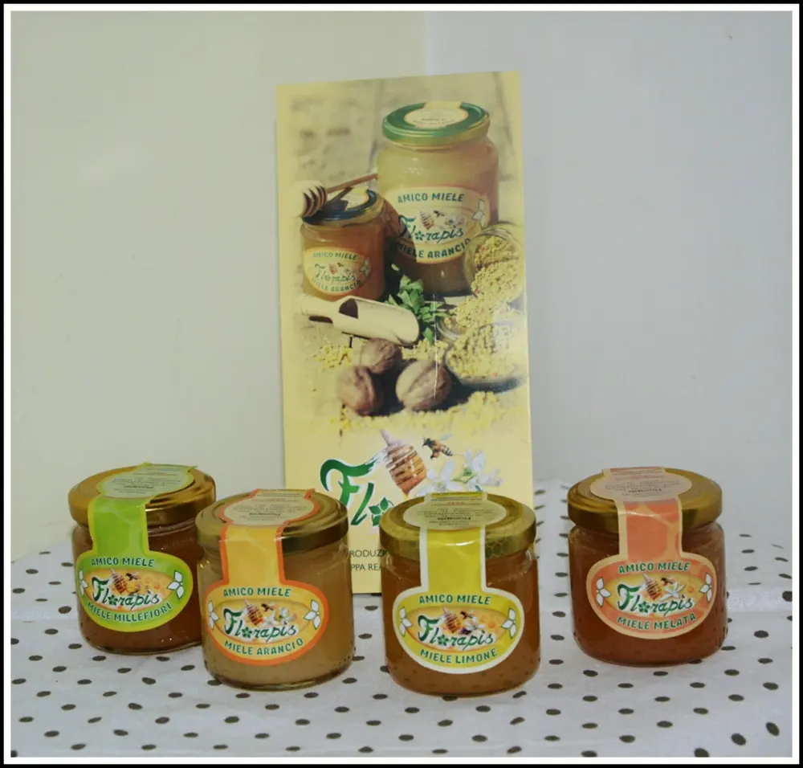
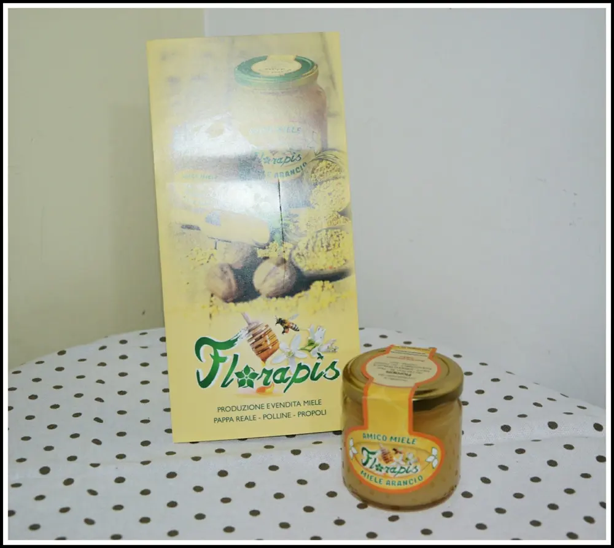
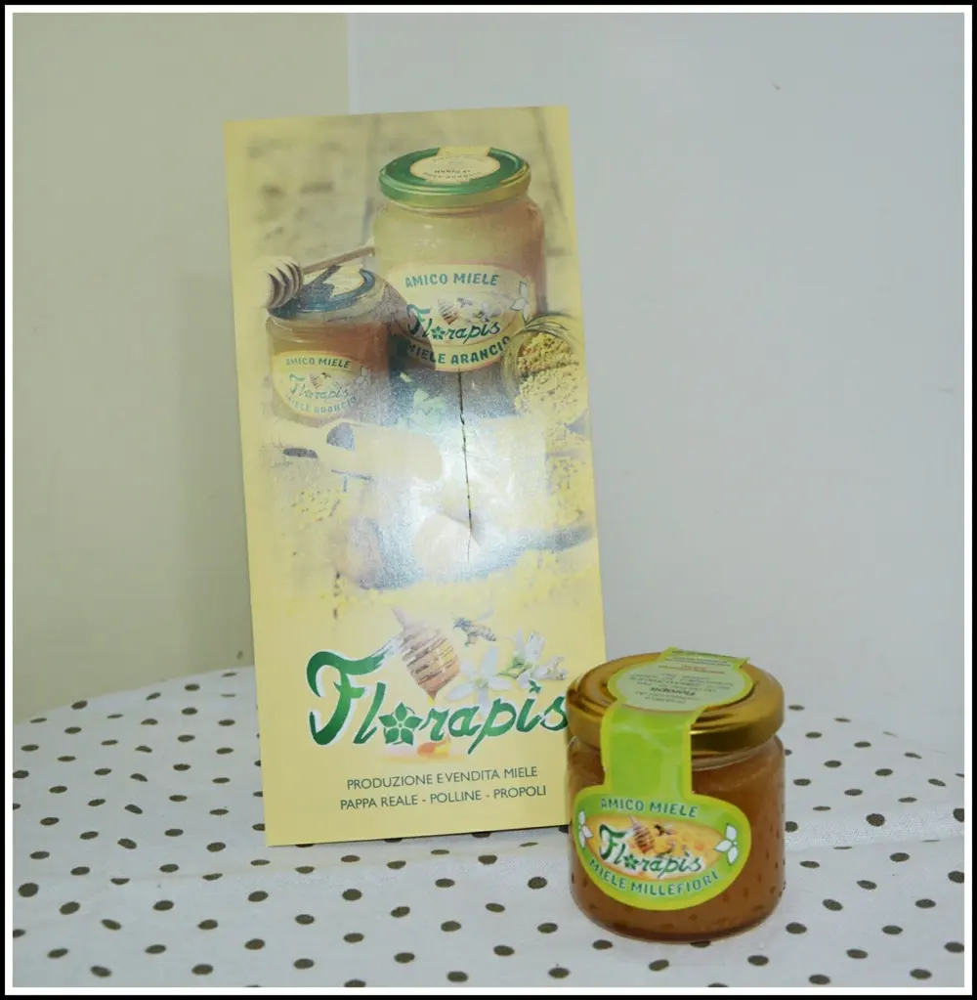
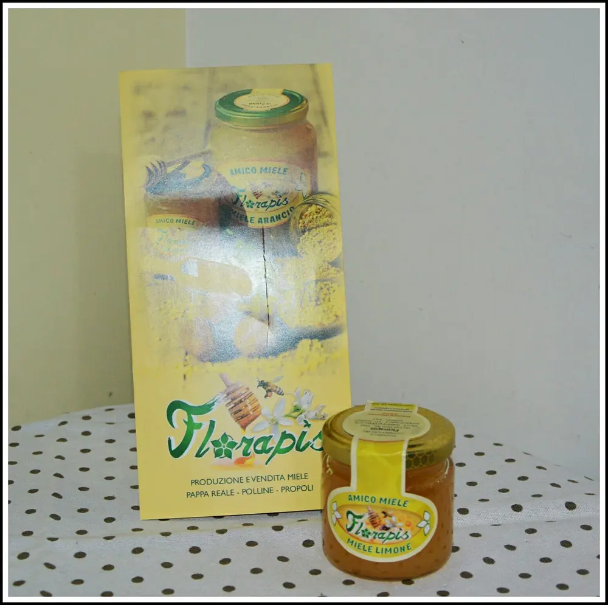
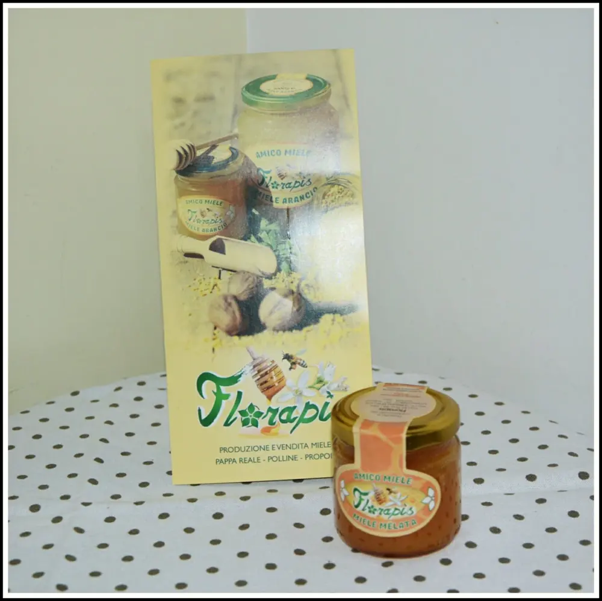
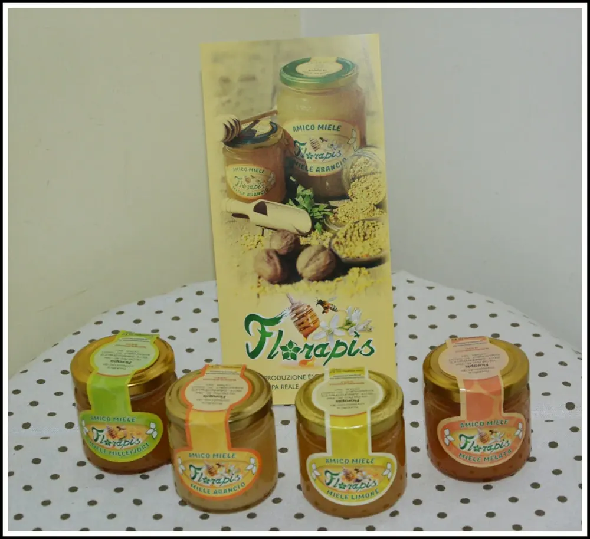
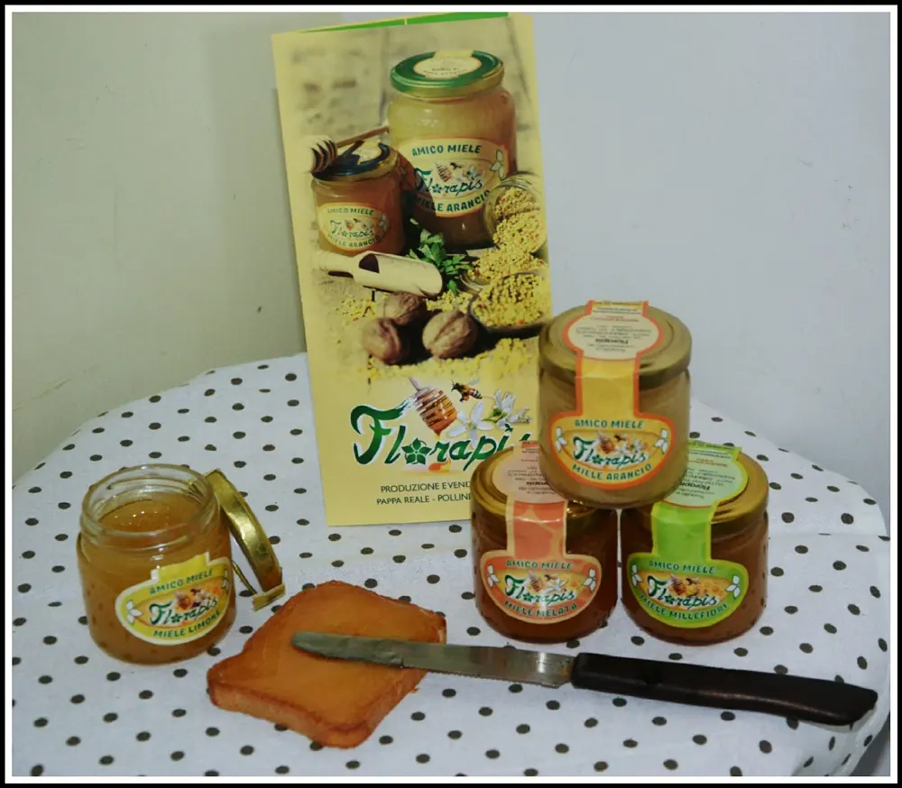

FLORAPIS - MIELE ITALIANO
FLORAPIS: Oggi parliamo di un qualcosa che fa bene a tante cose che secondo me non tutti sanno. Il miele.
Documentiamoci un pò insieme: Sapevate che il miele per il canto è un buon toccasana?
Sì, perché aiuta le corde vocali ed anche per prevenire l'abbassamento della voce.
Come i muscoli, anche le corde vocali, essendo anch'esse stesse un muscolo, hanno bisogno del solito riscaldamento prima di cantare.
Infatti spesso sentiamo i professionisti accennare qualcosa nei camerini così, a cappella. Questo perché hanno bisogno di riscaldare la voce.
È infatti un buon metodo bere dell'acqua calda con miele e mezzo limone per disinfettare le corde vocali.
Informiamoci:
Come è noto conoscere, il miele viene usato molto in caso di influenze, questo perché?
Perché il miele ha proprietà antiossidanti e aiuta così, mantenere l'integrità dei tessuti e delle cellule stesse.
Difatti non viene solo usato come una prevenzione bensì come una cura naturale per chi soffre di catarro, mal di gola, tosillite e tosse secca.
Cosa fa in questi casi il miele?
Forma uno strato protettivo sulla superficie della gola per calmare la tosse e, nello stesso tempo, idrata la parte infiammata.

Sapevate ogni miele è indicato per specifiche cose?
Ad esempio: Il miele di castagno è appunto, indicato per la voce.
- Il miele al fior di eucalyptus: è appropriato per liberare le vie respiratorie. Infatti, grazie alle proprietà antisettiche, calma la tosse e dà sollievo ai bronchi.
- Il miele all'arancio: è indicato per chi ha difficoltà a dormire in quanto è molto calmante e rilassante.
- Il miele d'acacia: è lassativo e disintossicante del fegato.
- Il miele millefiori: è molto indicato per i bambini ed i giovani in crescita.
È un buon toccasana anche per chi fa sport, le gestanti e gli anziani.
Tutto questo perché fissa il calcio e il magnesio nelle ossa.
Il miele di timo è tonico e soprattutto è indicato per chi è debole di reni.
Qui ho riportato alcuni tipi di miele, esistono molti altri tipi e tutti hanno proprietà benefiche.

Vi ho spiegato un pò dei benefici e delle proprietà del miele perchè, in questo post, voglio mostrarvi una delle migliori aziende di miele che io abbia mai conosciuto.

FLORAPLIS, un'azienda siciliana che si occupa dell'allevamento di api da anni.
Offre una vastità di soluzioni adatte alla tavola, all'uso singolo e al benessere psico-fisico.
È possibile infatti, nel shop Florapis, acquistare pappa reale, polline di propoli. Insomma tutto ciò che occorre per prendere ogni proprietà benefica che le api possono offrire.

Ho avuto il piacere di provare e assaggiare 4 tipi di miele.
Il miele arancio:
Come abbiamo detto sopra, il miele fior d'arancio è un ottimo rilassante per chi non riesce a dormire.
Io ho il vasetto Florapis, anche molto molto carino in cucina, da 125 gr.
Ha un colore leggermente ambrato, un profumo delicato del fior di Zagara. Lo si usa maggiormente in torte e dolci, ma viene utilizzato anche in tisane e tè.
Prezzo: 2,50€

Il miele millefiori:
Anche di lui abbiamo parlato sopra, abbiamo difatti detto che aiuta a trattenere il calcio e il magnesio che servono per le ossa.
Anche questo vasetto è di 125 gr.
Colore anch'esso leggermente ambrato, con un gusto un pò più forte in quanto il suo miele deriva da svariati fuori, ecco così il nome millefiori.
Prezzo: 2,50 €

Il miele limone:
Devo dire che ho assaggiato questo miele per primo, anche per fare la foto che vedete sulla fetta biscottata. Ovviamente prepari e scatti poi che fai? Lo butti? Certo che no :D
È strabuono. Dolce ma non forte.
Dal colore chiaro è un pregiato miele da tavola.
Peso: 125 gr Prezzo: 2,50 €

Il miele melata:
Ha un gusto meno dolce infatti ha un retrogusto particolare.
Ottimo per bronchiti e faringiti. È un miele ricco di sali minerali.
Peso: 125 gr Prezzo: 2,50 €

Voglio ricordare però, che di ogni miele ci sono 4 misure da scegliere.

Consiglio di visitare lo SHOP di Florapis e di guardare voi stessi i tanti prodotti biologici e naturali che quest'azienda offre.
